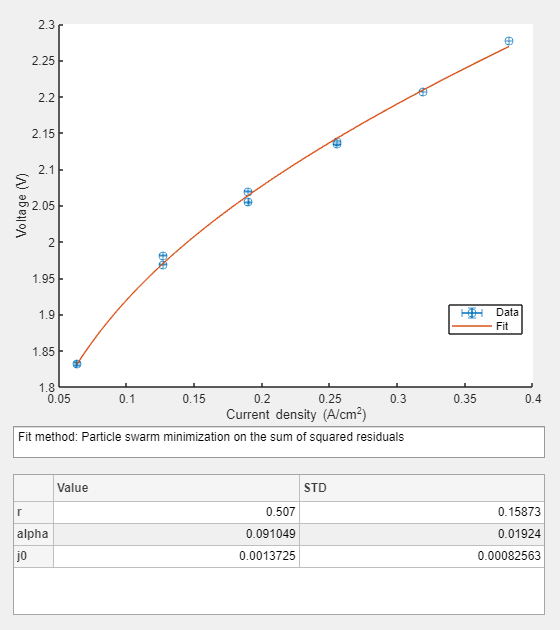

Electrolyzer modelling tool: Step-by-step usage example of the UI curve fitting functionality
Usage of the water electrolysis modelling library is mainly based on the functionality of an electrolyzerModel object. This object is used to store all the information reqired for the model including electrolyzer type, measured variables, constants, model parameters and modelling equations. Simple-to-use methods for fitting and plotting are also incorporated.
A basic usage example of performing UI curve fit to measured voltage and current data is presented in this file.
Contents
Constructing the modelling object
To construct the modelling object one must specify the electrolysis type and, in the case of alkaline electrolysis, the chemical formula of the electrolyte. Both of these are given as name-value pairs.
eModel = electrolyzerModel('type','alkaline','electrolyte','NaOH');
Input options for electrolyzerModel constructor are:
| type | electrolyte |
|---|---|
| 'pem' | 'Polymer membrane' (default) |
| 'alkaline' | 'KOH' (default) |
| 'NaOH' |
The fresh electrolyzerModel object contains the following properties:
eModel.report
Electrolyzer model properties:
type: alkaline
electrolyte: NaOH
molarMassOfElectrolyte: 39.9971 kg/mol
Modelling function:
equation: pass
Workspace:
description valueMean valueMin valueMax standardDeviation
____________________________________________________ _________ ________ ________ _________________
nCells {["Variable: scalar without confidence bounds" ]} 1 NaN NaN NaN
cellArea {["Variable: scalar without confidence bounds" ]} 1 NaN NaN NaN
electrolyte {["Variable: numeric helper variable for alkaline"]} 2 NaN NaN NaN
molarMassOfElectrolyte {["Variable: scalar without confidence bounds" ]} 39.997 NaN NaN NaN
molality {["Variable: dependent, no value assigned" ]} NaN NaN NaN NaN
Molarity {["Variable: dependent, no value assigned" ]} NaN NaN NaN NaN
wtfrac {["Variable: dependent, no value assigned" ]} NaN NaN NaN NaN
T {["Variable: no values assigned" ]} NaN NaN NaN NaN
funcStorage:
Empty funcStorage
PlottingCurves: No curves available. Perform model fit to get plotting curves.
Defining system variables
After model construction the simplest way to proceed is to define some system variables, like temperature and pressure, which are needed for calculating the Nernst potential for the system. For alkaline electrolysis the required variables are:
- Temperature, T (in kelvin)
- System pressure, ps (in bara)
- Electrolyte concentration, either as molality (in mol of solute/kg of solvent), Molarity (in mol of solute/L of solution) or wtfrac (in mass of solute/mass of solution)
For PEM, on the other hand, the required variables would be:
- Temperature, T (in kelvin)
- Anode pressure, pAn (in bara)
- Cathode pressure, pCat (in bara).
T = 273.15 + 70; % Temperature in kelvin ps = 3; % System pressure in bara
The alkaline models require concentration as molality, but often weight fractions are more commonly known. Therefore the electrolyzerModel class contains methods for automatic conversion between molality and weight fractions. These conversions use the known molar mass of the given electrolyte salt. Weight fraction can be given both as percents (assumed when input > 1) or directly as a fraction (input < 1).
wtfrac = 30; % concentration as weight percentage
Variables have to be provided to the model as a Workspace structure (see the documentation of func for more information). A Workspace structure contains substructures for Variables, Parameters and Constants. For our purpose we have to provide the previously defined variables:
Workspace = struct('Variables',struct('T',T,'ps',ps,'wtfrac',wtfrac))
Workspace =
struct with fields:
Variables: [1×1 struct]
To check compatibility with the Workspace requirements, one can use the static method func.isWorkspace of the func class.
func.isWorkspace(Workspace)
ans = logical 1
The workspace-compatible structure can now be set for the electrolyzer model:
eModel.setInWorkspace(Workspace) eModel.viewWorkspace;
description valueMean valueMin valueMax standardDeviation
____________________________________________________ _________ ________ ________ _________________
nCells {["Variable: scalar without confidence bounds" ]} 1 NaN NaN NaN
cellArea {["Variable: scalar without confidence bounds" ]} 1 NaN NaN NaN
electrolyte {["Variable: numeric helper variable for alkaline"]} 2 NaN NaN NaN
molarMassOfElectrolyte {["Variable: scalar without confidence bounds" ]} 39.997 NaN NaN NaN
molality {["Variable: dependent scalar" ]} 10.715 NaN NaN NaN
Molarity {["Variable: dependent scalar" ]} 9.7071 NaN NaN NaN
wtfrac {["Variable: dependent scalar" ]} 0.3 NaN NaN NaN
T {["Variable: scalar without confidence bounds" ]} 343.15 NaN NaN NaN
ps {["Variable: scalar without confidence bounds" ]} 3 NaN NaN NaN
Defining the modelling function
Once the modeling object has been created and variables set, it is possible to use helper method addPotentials to construct the full overpotential function.
eModel.addFuncs('nernst','ohmic','activation')
Single cell open circuit voltage modelling properties: Reversible voltage model: 1 Electrolyzer type: alkaline Ohmic overpotential modelling properties: Resistance model: 1 -- Total cell resistance, combined electronic and ionic components Activation overpotential modelling properties: Model: 1 -- Hyperbolic sine approximation with variable alpha
The input above provides the default versions of each potential term using the information already included in the model object. Alternatively one can input non-default potential terms by providing any number of func objects that are either created by one of the functions nernst, ohmic, activation or concentration, or custom built by the user. Most of them existing potential functions have alternative model options available that can be used in the modelling by providing the func -objects directly (see the documentation of the respective functions). One can also provide any other func object for including some custom potential term that has not been listed in this documentation file.
Variable amount of potential terms can be added and the order for them does not matter. Some methods like the fitUI and showUI cannot be called before potentials are added as there would be nothing to fit or plot in that case.
The func objects provided for the system all introduced their necessary constants and parameters to the Workspace structure
eModel.report;
Electrolyzer model properties:
type: alkaline
electrolyte: NaOH
molarMassOfElectrolyte: 39.9971 kg/mol
Modelling function:
equation: 1/(n_e*F)*(-159.6.*T+2.8472e5)+(R.*T)/(n_e*F).*log((ps-psvEl).^(3/2)./aH2OEl)+r.*current+1/alpha.*((R.*T)./(n_e*F)).*asinh(current./(2*j0))
Workspace:
description valueMean valueMin valueMax standardDeviation
____________________________________________________ _________ ________ ________ _________________
F {["Constant: scalar without confidence bounds" ]} 96485 NaN NaN NaN
n_e {["Constant: scalar without confidence bounds" ]} 2 NaN NaN NaN
R {["Constant: scalar without confidence bounds" ]} 8.3145 NaN NaN NaN
nCells {["Variable: scalar without confidence bounds" ]} 1 NaN NaN NaN
cellArea {["Variable: scalar without confidence bounds" ]} 1 NaN NaN NaN
electrolyte {["Variable: numeric helper variable for alkaline"]} 2 NaN NaN NaN
molarMassOfElectrolyte {["Variable: scalar without confidence bounds" ]} 39.997 NaN NaN NaN
molality {["Variable: dependent scalar" ]} 10.715 NaN NaN NaN
Molarity {["Variable: dependent scalar" ]} 9.7071 NaN NaN NaN
wtfrac {["Variable: dependent scalar" ]} 0.3 NaN NaN NaN
T {["Variable: scalar without confidence bounds" ]} 343.15 NaN NaN NaN
ps {["Variable: scalar without confidence bounds" ]} 3 NaN NaN NaN
psvEl {["Variable: dependent scalar" ]} 0.16045 NaN NaN NaN
aH2OEl {["Variable: dependent scalar" ]} 0.51641 NaN NaN NaN
current {["Variable: no values assigned" ]} NaN NaN NaN NaN
r {["Parameter: no values assigned" ]} NaN NaN NaN NaN
alpha {["Parameter: no values assigned" ]} NaN NaN NaN NaN
j0 {["Parameter: no values assigned" ]} NaN NaN NaN NaN
funcStorage:
name func equation
____________ ________ _______________________________________________________________________________
"nernst" 1×1 func "1/(n_e*F)*(-159.6.*T+2.8472e5)+(R.*T)/(n_e*F).*log((ps-psvEl).^(3/2)./aH2OEl)"
"ohmic" 1×1 func "r.*current"
"activation" 1×1 func "1/alpha.*((R.*T)./(n_e*F)).*asinh(current./(2*j0))"
PlottingCurves: No curves available. Perform model fit to get plotting curves.
Copying the modelling object
If one wants to copy the created electrolyzer model before further operations, direct reassigning is not going to do the trick. As the class electrolyzerModel inherits class handle, changes to a reassigned object will affect the original one and vice versa. Therefore, the class has a method copy included that creates a separate object that includes all the information from its parent but breaks the link between the child and the parent objects.
eModel2 = eModel.copy; if isequal(eModel,eModel2) disp("Copy (eModel2) is the same object as the original (eModel)") else disp("Copy (eModel2) is separate from the original (eModel)") end
Copy (eModel2) is separate from the original (eModel)
Fitting
To fit the model to existing UI measurement data one can use the method fitUI of electrolyzerModel class.
Some example data can be found from folder TestData:
load('AlkaliData.mat')
voltageData = AlkaliUI.U;
currentData = AlkaliUI.j;
temperatureData = AlkaliUI.T(:,1);
pressureData = AlkaliUI.P(:,1);
Alternatively one can create synthetic UI curve for testing purpose using special function createSyntheticUI, which enables user to set the amount of data points, defaulted at 20. The user can also induce normally distributed measurement error by defining the number of measurements for each data point and the measurement error as a fraction of the reading. For more detailed explanation of the function, see its documentation.
Let's replace the preset temperature and pressure from the electrolyzer model with the measured temperature and pressure vectors
eModel.replaceInWorkspace('T',temperatureData,'ps',pressureData);
Let's choose particle swarm as our fitting method.
method = "PS";
Alternatively one could use the Non-Linear Least Squares Error regression by calling for "NLLSE".
Weighting of the low current values is enabled with the following option:
weights = "l";
The weights are added to improve parametrization of the activation overpotential, whose effect is post prominent in the lower current densities. Now that mass transfer effects are not present in the data to be fitted, we do not weigh the higher current densities, which could be done by adding letter "h" to the weights call. More in-detail description of the options can be found from the documentation of the function fitUI.
[fitParams,gof] = eModel.fitUI(voltageData,currentData,'method',method,'weights',weights);
Data fit performed using Particle Swarm Optimisation approach R^2: 0.997820
NOTE: The fitting tool doesn't consider the units of the measured data but the user has to keep in mind the used units. Some fitting parameters are sensitive to units, for example resistance r and exchange current density j0.
Viewing the results
To see the results, one can use the showUI method to perform a quick automated plot.
eModel.showUI
The parameter values and their uncertainty (standard deviation) can be seen from the output of fitUI
disp(fitParams)
r alpha j0
_______ ________ __________
0.5469 0.093957 0.0013345
0.16534 0.019441 0.00092957
or by calling electrolyzerModel.getParams method.
disp(eModel.getParams)
Value Std
_________ __________
r 0.5469 0.16534
alpha 0.093957 0.019441
j0 0.0013345 0.00092957
Some goodness of fit values are stored in fitUI output gof:
- ssr: Square Sum Residuals
- rmse: Root Mean Square Error
- rsquare: the R^2 value of the fit
disp(gof)
ssr: 0.00047965
rmse: 0.0066034
rsquare: 0.99782
Using fit parameters
To calculate the voltage values based on the just fitted UI curve, one can use the calculate method of electrolyzerModel.
Ufit = eModel.calculate('current',currentData);
The variables still missing from the Workspace have to be provided as name value pairs. The variables given as input to the calculate method are preferred over the values with the same name already contained in the Workspace. This way the model can be used to calculate cell voltage based on the UI curve in different conditions than where the curve used for parametrization was measured.